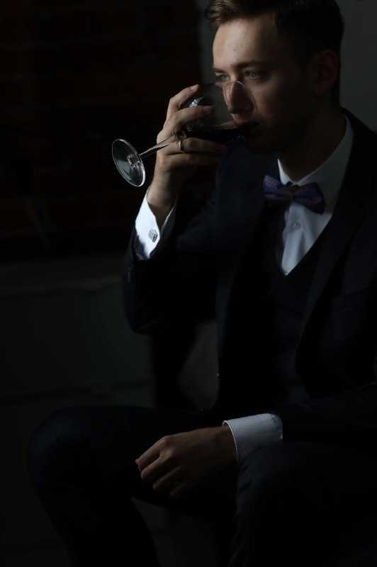

|
Вместо введенияЗдравствуй, дорогой читатель, наверняка ты зашел сюда, чтобы узнать получше о жизни и славе гениальнейшего человека, профессионала своего дела, мастера перфомансов и реприз, душевного и мегакрасивого гражданина. Не хватит времени и всего богатства языков мира, чтобы описать величие этого простого, на первый взгляд, скромного человека. И.С.Тургенев писал о нем следующее: "Во дни сомнений, во дни тягостных раздумий о судьбах моей родины, — ты один всем поддержка и опора, о великий, могучий, правдивый и свободный русский Седых! Не будь тебя — как не впасть в отчаяние при виде всего, что совершается дома? Но нельзя верить, чтобы такой человек не был дан великому народу! Детство
Детство моё прошло на берегу полноводной реки - матушки Волги,
недалеко от славного города-героя - Волгограда, в столице арбузных
фестивалей, бывшем купеческом центре Российской Империи, в месте,
где родился и вырос прославленный летчик, Герой Советского Союза -
А.П.Маресьев - Камышине. Надо сказать, что жизнь в степном
провинциальном городе накладывает особый отпечаток на мироощущение
и целеполагание. С малых лет дети Волги впитывают в себя видение
мира, как совокупности 2 половин, 2 куполов - бескрайней песчаной
земли и бескрайнего безоблачного неба. Эти 2 противоположности с
бесконечной линией горизонта посередине и дикими ветрами дают
непередаваемое ощущение свободы и размаха души. Степной человек
скучает в городах, ему некомфортно при любом ограничении. Душа у
таких людей добрая, но бунтарская. Романтики-хулиганы всегда
немного с вызовом воспринимают дисциплину, уставные отношения,
пресмыкание перед начальством, доносы на товарищей и прочие
"прелести" этого мира. Хотя и понимают неизбежность их
существования. Однако, им гораздо проще относиться к любому
собеседнику, как к равному. Будь он простым или семи пядей во
лбу. Юность
Юные годы мои совпали с эпохой "Верни мне мой 2007", торжеством
глобализма, капитализма и всеобщей дружбы народов мира.
Одновременно с этим наложился кризис еще советской системы
образования. Учителя старели, уходили, на их место приходили
молодые, менее ответственные, но и менее строгие наставники. Но
для меня это было только плюсом. Все, что было необходимо, я читал
дома. В школе же мы с одноклассниками участвовали в художественной
самодеятельности, репетировали в актовом зале, выступали на
пятничных концертах. Мы залетали на уроки в костюмах космонавтов,
читали стихи любимым девочкам на переменах, общались и еще раз
общались. Нравилось ли мне? Однозначно, школьная пора - одна из
любимейших вех моей жизни, а однолкассники до сих пор
ассоциируются с искренними, добрыми и надежными людьми. Мои институты
Учеба в Первом МГМУ им. И.М.Сеченова, как и в любом медицинском
институте, была не сахар. Бессонные ночи; книги, прочитанные за 1
день; огромные объемы не всегда понятной информации - вот лишь
немногое из прелестей обучения на врача. Но и здесь рубеж был
взят, красный диплом спустя 6 лет лег на полку моего шкафа. Далее
были год интернатуры по общей хирургии с дежурствами и бессонными
ночами, 2 года ординатуры по урологии с дежурствами и бессонными
ночами в двойном размере. В это же время я начинаю осознавать
простую, пока еще не оформленную до конца идею: мои усилия в
должной мере не оцениваются. А я люблю жить хорошо. Посмотрев на
быт самых успешных врачей, зарабатывающих за свой титанический
труд официально 100 000 рублей, а то и меньше, что для Москвы
равносильно работе любого другого неквалифицированного работника.
Надо было что-то менять. Вместо послесловияКак видите, основная мысль, красной линией проходящая через всю мою жизнь - я могу быть хорош в любой области. Но взамен имею право выбора. Мой выбор - достойная ценность часа моей работы. Как бы меркантильно и банально это не звучало. Можно работать сутками, можно перерабатывать, но иметь достойную компенсацию альтернативных издержек. Когда люди говорят, что получили бесценный опыт от работы - они боятся сказать, что их надули. Время - деньги. Любого работника. Именно это и сподвигло меня обратить взор в сторону IT. |